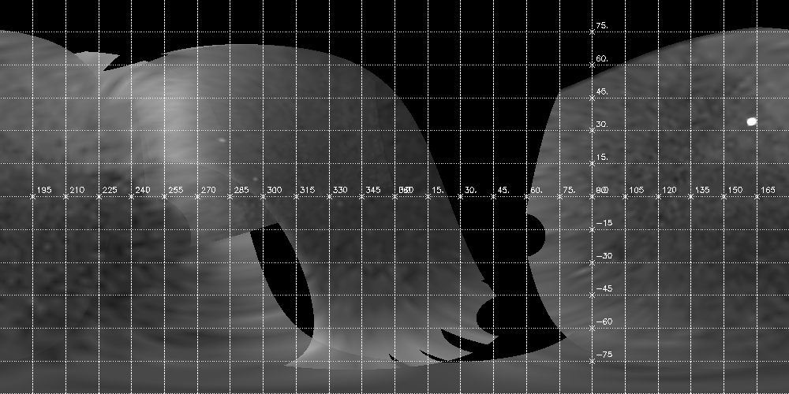

cas_vims_example.pro
includes main-level programVIMS EXAMPLE
This script demonstrates reading Cassini RADAR VIMS cubes and projecting them onto an equirectangular mosaic.
The data files are provided in the demo/data directory.
Setup: The instrument detectors, translators and transforms must contain the
VIMS definitions, as is included in demo/data/instrument_detectors.tab,
demo/data/translators.tab, and demo/data/transforms.tab.
This example requires SPICE/Icy to have been setup. It can be run just by doing:
.run cas_vims_example
Read VIMS files
Set up a hash containing the file names and precomputed pointing offsets:
hdxy=hash()
hdxy['CM_1559100372_1_ir_eg.cub']=[-2d0,-2d0]
hdxy['CM_1503358311_1_ir_eg.cub']=[5d0,-1d0]
hdxy['CM_1477456632_1_ir_eg.cub']=[2d0,-3d0]
hdxy['CM_1504754217_1_ir_eg.cub']=[1d0,-2d0]
files=getenv('OMINAS_DIR')+'/demo/data/'+((hdxy.keys()).toarray())
n = n_elements(files)
dd = dat_read(files)
foreach ddd,dd do dat_set_data,ddd,0.>dat_data(ddd)<0.1
Set up descriptors needed to make the grids and mosaic
Create an array of global descriptors and populate it:
gd = replicate({cd:obj_new(),cds:objarr(256), gbx:obj_new(), dkx:obj_new(), ltd:obj_new()}, n)
for i=0, n-1 do gd[i].cds = pg_get_cameras(dd[i])
for i=0, n-1 do gd[i].cd=gd[i].cds[0]
for i=0, n-1 do gd[i].gbx = pg_get_planets(dd[i], od=gd[i].cd, name='TITAN')
for i=0, n-1 do gd[i].ltd = pg_get_stars(dd[i], od=gd[i].cd, name='SUN')
limb_ps = objarr(n)
dxy = dblarr(2,n)
for i=0, n-1 do dxy[*,i] = hdxy[file_basename(files[i])]
for i=0, n-1 do for j=0,255 do pg_repoint, dxy[*,i], 0d, cd=gd[i].cds[j]
for i=0, n-1 do gd[i].cd=gd[i].cds[0]
for i=0, n-1 do limb_ps[i] = pg_limb(gd=gd[i]);
Display an image of one of the bands with a limb and grid on top
Create an array of global descriptors and populate it:
xsize=800
ysize=800
zoom=8
offset=[-20,-20]
for i=0, n-1 do begin
tvim, (dat_data(dd[i]))[*,*,70], $
zoom=zoom,/order, /new,offset=offset,$
xsize=xsize,ysize=ysize
pg_draw, limb_ps[i]
write_png,tvrd()
endfor
tvim, /list, wnum=ww
imc=0
for i=0,n-1 do begin
grid_ps = pg_grid(gd=gd[i], lat=lat, lon=lon)
pg_hide, grid_ps, cd=gd[i].cd, gbx=gd[i].gbx
pg_hide, grid_ps, cd=gd[i].cd, gbx=gd[i].gbx,$
od=gd[i].ltd
pg_draw, grid_ps, color=ctblue(),wnum=ww[i]
plat_ps = pg_grid(gd=gd[i],slon=!dpi/2d,lat=lat,nlon=0)
pg_hide, plat_ps[0], cd=gd[i].cd, gbx=gd[0].gbx
pg_draw, plat_ps[0], psym=3, $
plabel=strtrim(round(lat*180d/!dpi),2),$
/label_p,wnum=ww[i]
plon_ps = pg_grid(gd=gd[i], slat=0d, lon=lon, nlat=0)
pg_hide, plon_ps[0], cd=gd[i].cd, gbx=gd[i].gbx
pg_draw, plon_ps[0], psym=3, $
plabel=strtrim(round(lon*180d/!dpi),2),$
/label_p,wnum=ww[i]
endfor


Create a 3-band mosaic
Correct the illumination with a Lambertian function:
dd_pht = objarr(n)
for i=0, n-1 do dd_pht[i] = pg_photom(dd[i], gd=gd[i],
refl_fn='pht_lamb', refl_parm=[0.9d], outline=limb_ps[i])
phtdata=list()
for i=0,n-1 do phtdata.add,(dat_data(dd_pht[i]))
bands=[70,104,106]
map_xsize = 1600
map_ysize = 800
moslim=[[0d0,0.2d0],[0d0,0.01d0],[0d0,0.1d0]]
mosaics=list()
foreach band,bands,iband do begin
for i=0,n-1 do dat_set_data,dd_pht[i],phtdata[i,*,*,band]
md = pg_get_maps(/over, gbx = pd1, name='TITAN',$
projection='RECTANGULAR',fn_data=ptr_new(),$
size=[map_xsize,map_ysize],origin=[map_xsize,map_ysize]/2)
dd_map = objarr(n)
for i=0, n-1 do begin
dd_map[i]=pg_map(dd_pht[i],md=md,gd=gd[i],aux=['EMM'])
tvim,dat_data(dd_map[i])<max((dat_data(dd[i]))[*,*,band]),/new
endfor


Combine the images in a mosaic and display it:
dd_mosaic = pg_mosaic(dd_map, mosaic=mosaic, $
wt='emm', comb='sum', data={x:1, emm0:cos(90d*!dpi/180d)})
tvim,moslim[0,iband]>mosaic<moslim[1,iband],/new
pd = pg_get_planets(dd[0], od=gd[0].cd)
gdm={cd:md,od:(gd[0].cd)[0],gbx:cor_select(pd,'TITAN'),$
dkx:gd[0].dkx}
map_grid_ps=pg_grid(gd=gdm, lat=lat, lon=lon)
plat_ps=pg_grid(gd=gdm, slon=!dpi/2d, lat=lat, nlon=0)
plon_ps=pg_grid(gd=gdm, slat=0d, lon=lon, nlat=0)
pg_draw, map_grid_ps, col=ctgreen()
pg_draw,plat_ps,psym=7,$
plabel=strmid(strtrim(lat*180d/!dpi,2),0,3),/label_p
pg_draw,plon_ps,psym=7,$
plabel=strmid(strtrim(lon*180d/!dpi,2),0,3),/label_p
mosaics.add,mosaic
endforeach



File attributes
| Modification date: | Mon Oct 30 14:33:32 2017 |
| Lines: | 84 |
| Docformat: | rst rst |